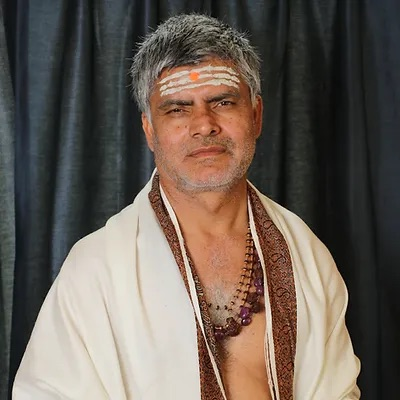

Yoga Sutra of Patanjali – Free Online Course
Beginning October 5, 2025, join Ācārya Dr. Sthaneshwar Timalsina for a 22-week online course exploring the Yoga Sutra of Patanjali. The class will include 18 live lectures and 4 discussion sessions, offered free of charge via Zoom.
Register at vimarshafoundation.orgAbout the Event
Join Ācārya Sthaneshwar for a FREE 22-Week Course exploring the philosophy and practice of Classical Yoga.
The Yogasūtra of Patañjali is one of the most ancient and foundational texts of Yoga Darśana, containing a systematic presentation of India’s Central Philosophy of Meditation. Ācārya Sthaneshwar was taught this and other Yoga texts by his Guru, the Kashmiri Saint Paramahaṃsa Svāmī Śrī Saccidānanda Sarasvatī (Khaptaḍ Baba), at his Himalayan hermitage in the mountains of Nepal. He will draw upon this experiential transmission of traditional wisdom and classical knowledge to expound the philosophy and practice enshrined in the Yogasūtra of Ṛṣi Patañjali.
This course will consist of 18 Lectures and 4 Discussion Sessions on Zoom, Sundays beginning October 5th, 2025 at 11:00 AM EST. There will be no classes scheduled from Mid-December to Mid-January for Winter Break.
Free access to the course content will end on April 12, 2026.
Course Schedule
The Yoga Sūtra of Patañjali course meets weekly on Sundays from 11:00 AM – 12:30 PM EDT, beginning October 5, 2025.
- Start Date: Sunday, October 5, 2025
- Weekly Sessions: Sundays, 11:00 AM – 12:30 PM EDT
- Break: No classes from December 14, 2025 – January 11, 2026 (Winter Break)
- Resume: Sunday, January 18, 2026
- End Date: Sunday, March 29, 2026
The classes will include 18 lectures with live Q&A and 4 discussion sessions across 22 weeks. Free access to recordings will remain available until April 12, 2026.
Meet the Teacher
Ācārya Dr. Sthaneshwar Timalsina is a traditionally trained scholar-practitioner from Nepal, consecrated as Śaivācārya within the Nepali Sarvāmnāya lineage. He was trained in the Vedas, Nyāya, Mīmāṁsā, Vedānta, Śaiva Siddhānta, Trika, and other śāstras under eminent teachers in Nepal and Varanasi.
He has long dedicated himself to preserving and sharing the profound wisdom of Indic traditions, both through traditional gurukula training and modern institutional teaching. In 2019, he founded the Vimarsha Foundation as a global platform for courses on classical texts and living traditions.
Learn moreFrequently Asked Questions
- Do I need prior knowledge of yoga philosophy?
- No. The course is designed for beginners as well as experienced practitioners who want to deepen their understanding.
- Is the course really free?
- Yes. Registration is required, but there is no cost to participate.
- Will recordings be available?
- Yes. Course sessions will be recorded and accessible online for free until April 12, 2026. After that date, access will transition to a paid format through Vimarsha Foundation.
History of the Yoga Sūtras of Patañjali
The Yoga Sūtras of Patañjali, composed around the 2nd century BCE, are among the most authoritative and influential texts of the yoga tradition. Widely regarded as the foundation of classical yoga philosophy, the work condenses centuries of oral teachings into a clear and systematic guide. It is divided into four chapters (pāda) that cover theory, practice, spiritual powers, and ultimate liberation.
At the heart of the text lies the eight-limbed path (aṣṭāṅga yoga), outlining ethical principles, meditation practices, and states of higher awareness. This framework has shaped not only Indian spiritual traditions but also modern global approaches to yoga, mindfulness, and meditation.
For centuries, the Yoga Sūtras have been studied by yogis, philosophers, and seekers worldwide. They integrate metaphysics, psychology, and practical methods into a unified vision of self-realization. Today, they continue to serve as a cornerstone for both traditional practice and contemporary explorations of yoga philosophy.
Begin Your Study of the Yoga Sūtras
Join this free 22-week course with Ācārya Dr. Sthaneshwar Timalsina and explore the philosophy and practice of classical yoga. Classes begin October 5, 2025.
Register Now – It’s Free